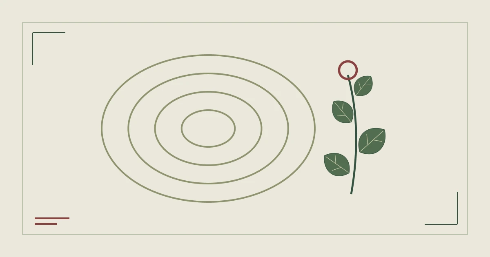

%%S10_EYEBROW%%
%%S10_TITLE%%
%%S10_SUMMARY%%

标本页签
%%S10_H2_1%%
%%S10_TEXT_1%%
- %%S10_RING_LABEL_1%%
%%S10_RING_TITLE_1%%
%%S10_RING_TEXT_1%%
- %%S10_RING_LABEL_2%%
%%S10_RING_TITLE_2%%
%%S10_RING_TEXT_2%%
- %%S10_RING_LABEL_3%%
%%S10_RING_TITLE_3%%
%%S10_RING_TEXT_3%%
%%S10_H2_2%%
%%S10_TEXT_2%%
- %%S10_POINT_1%%
- %%S10_POINT_2%%
- %%S10_POINT_3%%
%%S10_H2_3%%
%%S10_TEXT_3%%
%%S10_QUOTE%%
%%S10_QUOTE_CITE%%
%%S10_H2_4%%
%%S10_TEXT_4%%
%%S10_FAQ_LABEL%%
%%S10_FAQ_Q_1%%
%%S10_FAQ_A_1%%
%%S10_FAQ_Q_2%%
%%S10_FAQ_A_2%%
%%S10_FAQ_Q_3%%
%%S10_FAQ_A_3%%
%%S10_SOURCES_LABEL%%
%%AUTHOR_BIO%%
- %%S10_SOURCE_TITLE_1%%
%%S10_SOURCE_NOTE_1%%
- %%S10_SOURCE_TITLE_2%%
%%S10_SOURCE_NOTE_2%%